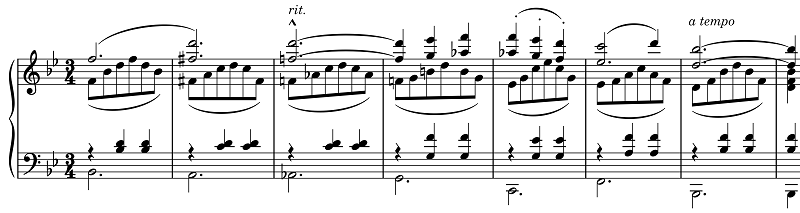

J. シュトラウスJr: 南国のバラ（シェーンベルク編）
シェーンベルクの「私的音楽協会」をテーマにした録音を以前取り上げたが、シェーンベルク・ヴェーベルン・ベルクのいわゆる三人組はこの演奏会のためにJ.シュトラウスのワルツ作品の編曲も行っている。どちらかというと余興のようなもので、演奏会の資金を集める目的が大きかったといわれている。この頃、既にハプスブルク帝国も消滅し共和制に移行していた中で、シュトラウスのワルツも古き良き時代を偲ぶといった形の受容が一般的だっただろうか。特にシェーンベルクの編曲した『南国のバラ』にはそういったノスタルジックな響きを感じてしまう。よく出来た編曲であり沢山の録音が見つかるが、Linos Ensembleの演奏はアンサンブルの精緻さ・楽しさ・録音の良さの揃った名演だ。
Rosen aus dem Süden, Op. 388
(Arr. A. Schönberg for Chamber Ensemble)
Linos Ensemble
(2008)
いくつもある美しい瞬間の中で、第2ワルツの終結部は格別だ。逆にここがなければ多分好んで聴く曲ではなかったかも。

この編曲にはLPの頃から下のDG盤で馴染んでいた。私の中ではこれが基準の演奏になってしまっているが、さすがに録音は古くなった。
Rosen aus dem Süden, Op. 388
(Arr. A. Schönberg for Chamber Ensemble)
Boston Symphony Chamber Players
(1977)
記事を書くにあたって他の録音を探していたら、バドゥラ＝スコダとキュッヒル四重奏団によるかなり以前の録音が見つかった。シェーンベルク編曲そのままではなく、ハルモニウムのないピアノ五重奏の形で演奏されているようで、ピアノ（と第1ヴァイオリン）がかなり前面に出ている。演奏はウィーンのシュトラウスそのもので、いくつか即興も入っていてアンコールピース的に演奏されているような感じだ。安心して聴ける馴染みのスタイルである。ただ、ライブということもあってか録音は上のボストンのものよりも悪い。
Rosen aus dem Süden, Op. 388
(Arr. A. Schönberg for Chamber Ensemble)
Paul Badura-Skoda, Küchl Quartet
(1980)
探せばまだまだあるのだろうが、もう一つだけ、現代音楽のスペシャリスト、アルディッティ四重奏団の演奏もあった。これは出だしから音も美しく丁寧な演奏ではあるものの、ウィーン情緒を表現しようという意図はまったくないようである。模範演奏という感じ。
Rosen aus dem Süden, Op. 388
(Arr. A. Schönberg for Chamber Ensemble)
Arditti Quartet, Håkon Austbø, Louise Bessette
(1989)
当時山ほどあったピアノのヴィルトゥオーゾ編曲がこの曲でもなされていないか調べてみたら、Eduard Schüttという人がパラフレーズを作っており、しかもそれがシチェルバコフのデビューアルバムに入っていた。シチェルバコフはゴドフスキーの録音をMarco Poloからたくさん出していたので、こんなマニアックなアルバムがデビューだったとわかっても驚きはしないが、編曲の選択が一味も二味も違っていて面食らう（シフラ編曲の『トリッチ・トラッチ・ポルカ』もあり）。残念ながら『南国のバラ』パラフレーズは編曲がどうもつまらない。ピアノ向きではないのかもしれない
Paraphrase über Walzer-Motive von "Rosen aus dem Süden"
(Arr. Eduard Schütt)
Konstantin Scherbakov
(1992)
(Dec. 17, 2022)